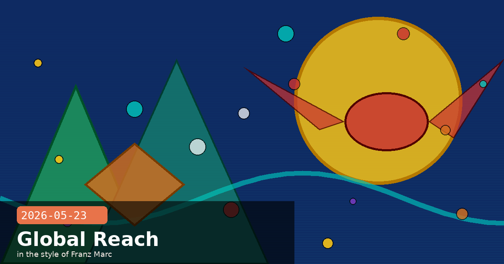

Anthropic Nears $900B Valuation, Gates Foundation Partnership & Cross-Faith AI Dialogue

🧭 Anthropic Closing in on $900 Billion Valuation — $30B Round Expected to Sign Within Days
Reports on May 23 indicate that Anthropic's newest funding round — a $30 billion raise at an implied valuation of approximately $900 billion — is on track to close as soon as the end of this month, per Business Standard citing investor briefings. The round was first reported by Bloomberg in mid-May and is co-led by Dragoneer Investment Group, Greenoaks Capital, Sequoia Capital, and Altimeter Capital. If confirmed, the valuation would put Anthropic ahead of OpenAI's most recent reported valuation of ~$852 billion, making it the most highly valued AI company in the world.
Context: the pace of re-rating
To appreciate how fast this is moving: Anthropic's Series G in February 2026 — led by Coatue and GIC — was itself a $30 billion raise, but at a $380 billion valuation. The new round would be the same size in dollars but at 2.4× the valuation, in just three months. The re-rating is driven primarily by the Q2 2026 revenue disclosure ($10.9B annualised run rate, first profitable quarter) and the rapid expansion of Claude Enterprise into regulated industries — finance, healthcare, government, and legal.
What this means for the ecosystem
Compute access — fresh capital will accelerate Anthropic's custom-silicon strategy, including the AWS Trainium partnership and the ongoing Microsoft Maia chip talks
Talent — at this valuation, Anthropic's equity becomes a stronger retention and recruiting tool against Google DeepMind and OpenAI
Pricing pressure unlikely — Anthropic has shown it can raise prices (Claude Pro tier) without losing enterprise adoption; this capital buys time to reach cash-flow breakeven on research, not a race to the bottom on API pricing
Attribution note
The $900B figure is reported based on investor briefings and term sheets in circulation — the round has not been formally announced. Treat this as a credible, well-sourced signal rather than a confirmed fact. Anthropic does not publicly disclose funding details until a round closes. This entry will be updated when an official announcement is made.
🧭 Anthropic and the Gates Foundation Announce a $200 Million, Four-Year Global Impact Partnership
Anthropic and the Bill & Melinda Gates Foundation announced a four-year partnership combining $200 million in grant funding, Claude API credits, and direct technical support — one of the largest commitments Anthropic has made outside of commercial enterprise contracts. The partnership targets four high-leverage areas where AI can accelerate progress for the world's poorest populations: neglected disease R&D, health-data analysis for low- and middle-income countries, K-12 literacy and maths tutoring, and agricultural productivity tools for smallholder farmers.
Priority programmes
Neglected disease research — Claude will assist researchers working on vaccines and therapeutics for diseases that receive little commercial investment because those affected can't pay market prices (malaria, TB, sleeping sickness, chagas)
LMI health data — analysis and synthesis of health data from the 4.6 billion people in low- and middle-income countries who currently lack access to comprehensive health services, enabling better resource allocation by ministries of health and NGOs
Tutoring at scale — AI-assisted maths and literacy tools deployed in US Title I schools, sub-Saharan Africa, and India; evaluated against Gates Foundation's existing evidence base for effective EdTech
Agricultural productivity — Claude-powered tools for smallholder farmers in Africa and South Asia covering crop planning, pest identification, market pricing, and weather-driven planting decisions
Open outputs commitment
Notably, Anthropic and the Gates Foundation have committed to releasing outputs as public goods where possible — datasets, evaluation frameworks, and findings from pilots will be openly published rather than kept proprietary. This is a meaningful departure from typical commercial AI partnerships and positions this work as a contribution to the global research commons.
For developers building humanitarian or social-impact applications
Anthropic is now demonstrably willing to structure partnerships that include API-credit grants for non-commercial use cases. If your organisation works in global health, education equity, or food security, the Gates Foundation partnership sets a precedent for how to approach Anthropic with a proposal — particularly if you can offer rigorous evaluation and open publication of results.
Gates Foundationglobal healtheducationsocial impactpartnershipopen research
🧭 Anthropic Invites 15+ Religious and Ethical Traditions Into Structured AI Development Dialogue
Anthropic published "Widening the Conversation on Frontier AI" — an initiative to bring scholars, clergy, philosophers, and ethicists from more than 15 religious and cross-cultural traditions into structured, ongoing dialogue about how frontier AI systems are built. The first focus is "moral formation": how AI systems like Claude develop character, values, and ethical reasoning, and whether the frameworks currently guiding that process reflect a sufficiently broad set of human traditions and perspectives.
A concrete experiment disclosed
The blog post contains one of the most candid technical disclosures Anthropic has made about alignment research: the team gave Claude access to an ethical-reminder tool during decision-making and found the model "reached for the tool at key moments, right before consequential actions." Evaluation results showed markedly lower rates of misaligned behaviour on internal alignment benchmarks compared to the baseline. This is a small but meaningful data point suggesting that access to explicit ethical scaffolding at inference time — not just training-time values — can measurably improve alignment.
Who is included in the dialogue
Phase 1 focuses on religious and cross-cultural ethical scholars — Christian, Jewish, Islamic, Hindu, Buddhist, and secular philosophical traditions are all named
Phase 2 (announced as forthcoming) will bring in legal scholars, psychologists, writers, and civic institutions
All participants engage through structured dialogue sessions and written responses rather than purely advisory boards, giving Anthropic ongoing access to diverse moral reasoning rather than a one-time consultation
Why this matters beyond PR
The alignment research detail — the ethical-reminder tool showing measurable improvement on internal benchmarks — is what elevates this above typical "responsible AI" announcements. It suggests Anthropic is actively testing whether runtime ethical scaffolding is a complement to, or partial substitute for, training-time value alignment. That is a live research question with significant implications for how safety constraints are implemented in future Claude versions.
The implication for enterprise deployers
If runtime ethical scaffolding demonstrably reduces misaligned behaviour, this could eventually become a configurable feature in the API — letting operators inject domain-specific ethical constraints into Claude's decision loop without requiring a fine-tune. Watch for this pattern appearing in future Anthropic API updates as the research matures.